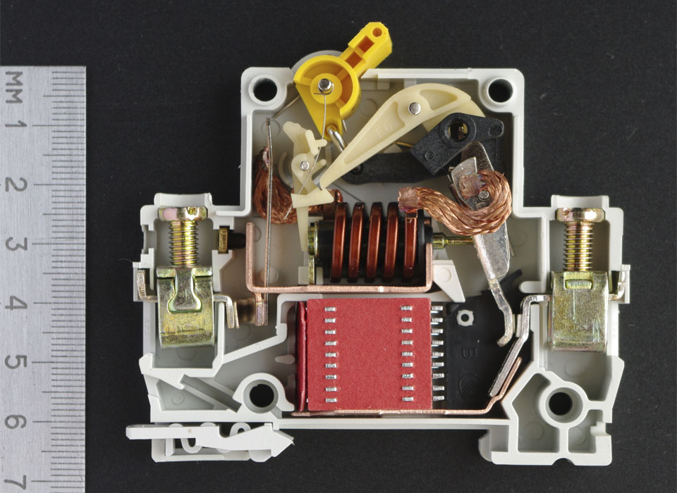
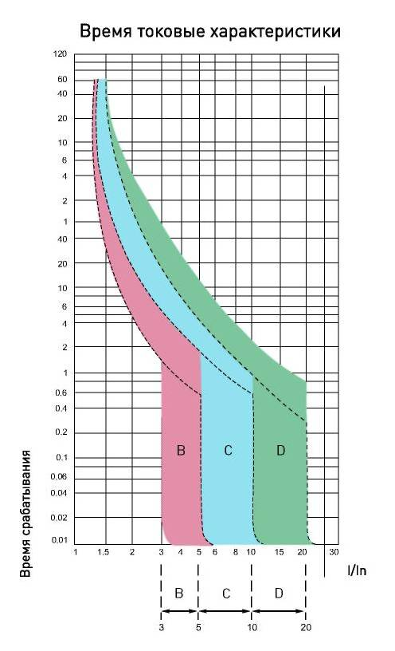

Автоматический выключатель – это механический аппарат, предназначенный для коммутации (включения и отключения) электрической цепи и защиты от короткого замыкания. Не путайте с дифференциальным автоматом, в свойства которого входит помимо защиты от короткого замыкания, защиты от утечки тока.
Основное предназначение автоматического выключателя- это защита участка цепи от токов, превышающих номинальный и от токов короткого замыкания. То есть при выборе автомата нужно руководствоваться не только номинальным током потребителя. Но об этом в конце статьи.
Автоматический выключатель конструктивно выполнен в диэлектрическом корпусе. Автоматический выключатель, рассчитанный на небольшие токи, в настоящее время чаще всего имеет модульную конструкцию с креплением для монтажа на DIN-рейку. Включение-отключение производится рычажком (положение вверх-вниз), провода подсоединяются к винтовым клеммам. Защелка фиксирует корпус выключателя на DIN-рейке и позволяет при необходимости легко его снять (для этого нужно оттянуть защелку, вставив отвёртку в петлю защелки). Коммутацию цепи осуществляют подвижный и неподвижный контакты. Подвижный контакт подпружинен, пружина обеспечивает усилие нажатия контактов во включённом состоянии и быстрое их отключение при срыве собачки механизма расцепления посредством одного из двух расцепителей: теплового или электромагнитного.
Тепловой расцепитель представляет собой биметаллическую пластину, нагреваемую протекающим током. При протекании тока выше допустимого значения биметаллическая пластина изгибается и приводит в действие механизм расцепления. Время срабатывания зависит от тока (времятоковая характеристика) и может изменяться от секунд до часа. Минимальный ток, при котором должен срабатывать тепловой расцепитель, составляет 1,45 от тока уставки теплового расцепителя. Настройка тока срабатывания производится в процессе изготовления регулировочным винтом. В отличие от плавкого предохранителя, автоматический выключатель готов к следующему использованию после остывания пластины.
Электромагнитный расцепитель - расцепитель мгновенного действия, представляет собой соленоид, подвижный сердечник которого также может приводить в действие механизм расцепления. Ток, проходящий через выключатель, течет по обмотке соленоида и вызывает втягивание сердечника при превышении заданного порога тока. Мгновенный расцепитель, в отличие от теплового, срабатывает очень быстро (доли секунды), но при значительно большем превышении тока: в 2-10 раз от номинала, в зависимости от типа (automatic_switches делятся на типы (классы) B, C и D в зависимости от чувствительности мгновенного расцепителя). В автоматических выключателях на большие токи начиная с 1970-х годов стали применять электронные расцепители.
Существуют пусковые токи- это ток в момент включения потребителя, который может превышать номинальный в несколько раз. Для того, чтобы автоматический выключатель не срабатывал на пусковом токе как защита от короткого замыкания, существует понятие класс. Класс обозначается буквой перед цифрой, указывающей его номинальный ток.
A-выдерживает пусковые токи в 2-3 раз превышающие номинальный.
B-выдерживает пусковые токи в 3-5 раз превышающие номинальный.
C-выдерживает пусковые токи в 5-10 раз превышающие номинальный.
D-выдерживает пусковые токи в 10-12 раз превышающие номинальный.
У отдельных производителей существуют другие кривые отключения.
Для бытовых нужд используются как правило автоматы класса В и С
Основная характеристика для выбора- это номинал автоматического выключателя (6А, 10А, 16А, и т.д.). Номинал необходимо подбирать из соображения здравого смысла, и необходимо учитывать сразу несколько факторов. Если потребитель, к примеру, потребляет ток порядка 22А, то автомат необходимо брать номиналом 25А. Но если при этом кабель до потребителя проложен сечением 1,5 квадратных мм., то автомат на 25А не подойдет, т.к. такой кабель выдержит только 19А. В таком случае, кабель может сгореть. Автомат необходимо ставить на 16А. Помимо этого, обращайте внимание и на характеристики розеток (как правило они держат ток до 16А), соединения проводов (если используете соединительные клеммы, смотрите на них, на какой ток они рассчитаны). Автоматический выключатель должен защищать самое "слабое" место после себя.